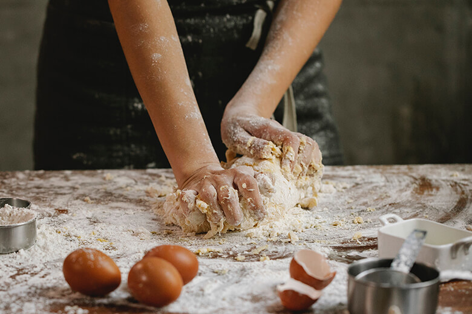
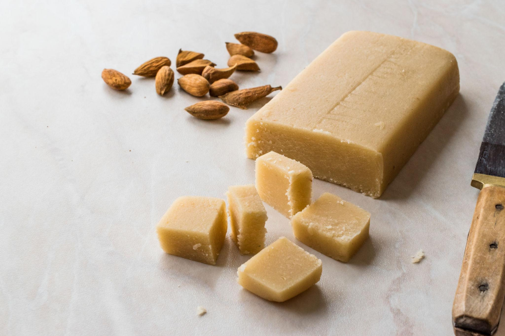
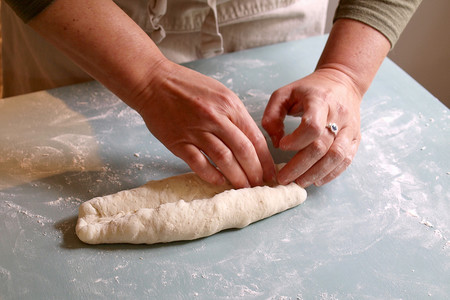
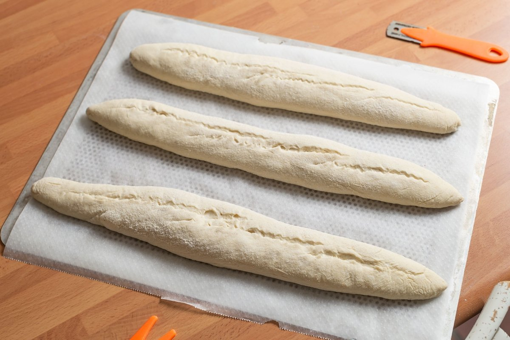
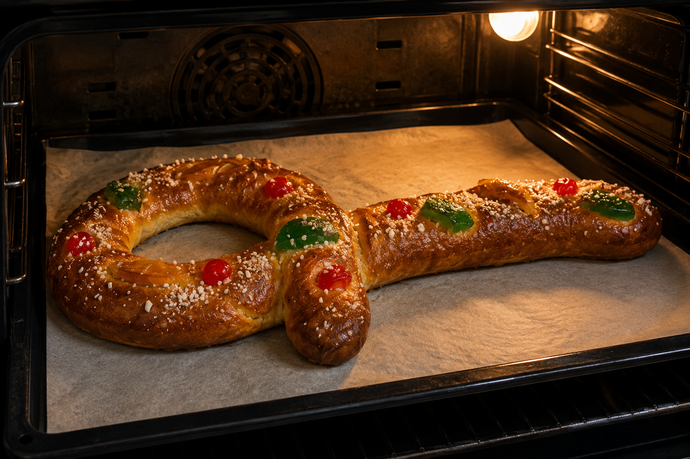

カタルーニャ州マタロの街では、十八世紀より菓子職人のギルドが毎年サン・シモンの祝日（十月二十八日）に剣の形をした菓子パンを焼く習慣が続いています。「剣」はかつて街を守った城壁の守衛を象徴するとも、使徒シモンの殉教に用いられた武器を表すとも言われています。
十九世紀末、産業革命とともにマタロは繊維産業で栄え、工場の労働者たちの間でもこの菓子が広まりました。今日では街の名物として観光客にも親しまれ、毎年この時期になるとパン屋の窓には金色の剣が並びます。
「サブル・ド・サン・シモ」の名はカタルーニャ語で「サン・シモンの剣」を意味します。どのパン屋も家伝の配合を持ち、ひまわりの種の量やアニスの配合にそれぞれの個性が宿ります。
強力粉、砂糖、塩をボウルに入れて混ぜます。ぬるま湯に溶かしたドライイースト、卵、甘口ワイン、バニラエッセンスを加え、生地がまとまるまでこねます。さらにバターを少しずつ加えながら10〜15分ほどこね、なめらかで弾力のある生地に仕上げます。
20分
01 · Massa 02 · Fermentació
02 · Fermentació
生地を丸めてボウルに入れ、ラップをかけて暖かい場所で発酵させます。約1〜2時間後、生地が2倍ほどの大きさになれば発酵完了です。その後、生地を軽く押してガスを抜きます。
1〜2時間アーモンドパウダーと粉砂糖を混ぜ合わせ、卵白を少しずつ加えて練ります。まとまったら細長い棒状に成形し、サーベルの中心に入れるフィリングを準備します。
10分
03 · Massapà
04 · Modelat生地を長方形に伸ばし、中央にマジパンを置きます。生地で包み込んでしっかり閉じたら、伝統的なサン・シモのサーベルのようにゆるやかな弧を描く形に整えます。
15分成形した生地を天板に移し、乾燥しないように布やラップをかけて休ませます。生地がひと回り大きくなり、ふんわりした状態になるまで発酵させます。
45〜60分
05 · Repòs
06 · Enfornat表面に溶き卵を塗り、ドライフルーツとあられ糖で飾ります。180℃に予熱したオーブンで25〜30分焼き、全体が美しい黄金色になったら取り出します。粗熱が取れたら完成です。
30分